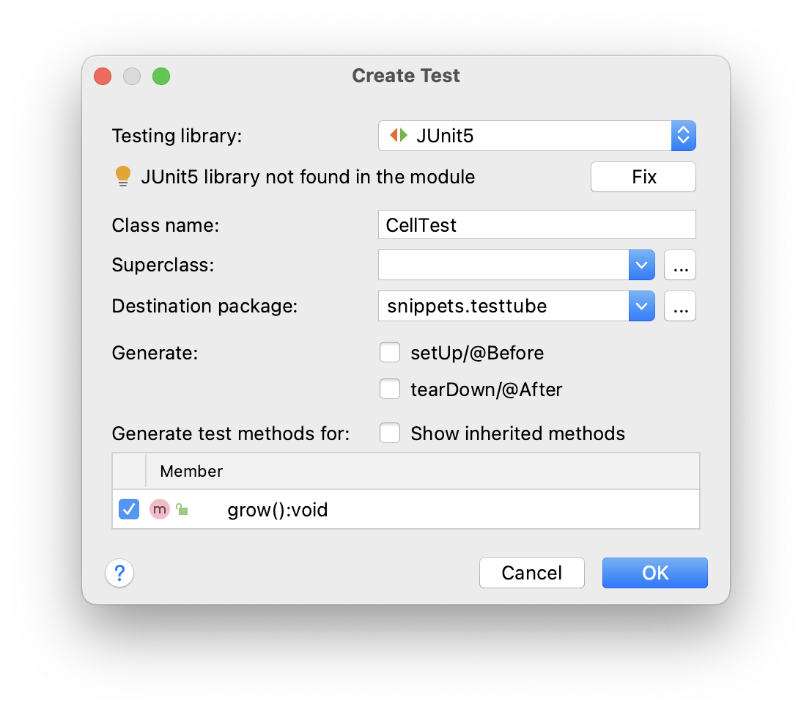

4. Objects and classes#
This chapter presents two independent reviews of what classes and objects are. The first part, named “Ninjas”, focuses on what an object is and does, and how it relates to a class. The second part, “Cells”, also discusses object relationships and testing.
4.1. Ninjas#
Suppose you are creating a game with ninjas, trolls and all other sorts of nasty creatures. In an Object-Oriented Programming (OOP) environment such as Java you will start by defining the entities that play a role in the app you are developing.
In this case, Ninja will be one of the entities, or Types populating the application.
Other types in this game may be Troll, Game, Player, Weapon, ScoreBoard, and so on.
Each of these Types will have properties and behavior: things they have and things they can do.
A Type is represented by a blueprint, its class. In Java, a class resides in a single source file with the same name as the class. This is unlike for instance Python in which there is no such enforced rule. The class of a type specifies how it should be created and initialized when needed.
A class defines a type
A class is a blueprint; it represents a type. Types can have properties in the form of instance or class variables - variables attached to the scope of the class body (not in method scope). Types can also have behavior in the form of methods.
These properties and methods can have object-scope or class-scope. In the latter case the keyword static is used.
Here is a simple class that is defined within source file Ninja.java.
class Ninja {
String name;
void fight() {
System.out.println(name + " is fighting. Hack hack swoosh.");
}
}
And we can create an instance of the Ninja type like this:
Ninja silentKiller = new Ninja();
Although the code is simple enough, a lot is going on here, some visible and some invisible.
We defined a type (blueprint) using the keyword
class, followed by the name of the type (Ninja).Class
Ninjaresides in fileNinja.java.Every
Ninjathat will ever be created will have anameproperty (also called instance variable) andfight()behavior. Thefight()behavior will be “dependent” on itsname.An instance of a class is created using the
newkeyword, followed by the class name with a pair of parentheses:Ninja(). The expressionNinja()is calling the constructor. This is a special kind of method. There is no constructor present here, but we get a default implementation for free from the compiler. It’s the same with Python; you can give a class an__init__()method but if your don’t the objects will still be constructed. The Java default constructor ispublic Ninja() {}Whenever an instance is created, its properties are initialized to their default values, unless specified otherwise. A
Stringproperty will benull, and anintwill be0. If you want properties to have other initial values you can specify that within the class:
class Ninja {
String name = "The Black One";
void fight() {
System.out.println(name + " is fighting. Hack hack swoosh.");
}
}
Note
Class names shuold be nouns starting with uppercase; variables should be nouns starting with lowercase. Method names should be verbs starting with lowercase. All Java names are in CamelCase.
In the Java core packages many types are predefined.
There are basic types, for instance Integer (representing whole numbers) and String (representing character data) but there are also more complex Types, such as LocalDate.
When programming you will create custom types all the time.
A Ninja type for instance.
Note
Unlike Python, Java also has non-object types.
These are the primitive types representing numbers and booleans (logical values).
They are easily recognized because there are only a few and their names start with lowercase: int, double etc.
They are discussed in detail in chapter Data Types
Next, we’ll have a another look at the Ninja type and create a slightly more realistic blueprint for it.
In our game, Ninjas can do what you would expect of them: they have a name and an energy level (0 means they’re dead, 100 is freshly spawned), they have a position in the game and they can move, and attack their opponents.
Given the above description, this is a second version of the Ninja class.
package nl.bioinf.nomi.ninjas;
class Ninja {
String name;
int energyLevel = 100;
double topCoordinate;
double leftCoordinate;
void move(double top, double left) {
this.topCoordinate += top;
this.leftCoordinate += left;
}
void attack(int power, GameCharacter opponent) {
//energy is drawn from its own reserve for an attack
this.energyLevel -= power;
//but has double effect on its opponent
opponent.drainEnergy(power * 2);
}
}
I kept this class really minimal - no access modifiers (public, private, static, etc) that will distract from the key points being made here.
At the top of the file there is a package declaration.
This defines the namespace this class lives in.
Since nobody in their right mind would use my web domain, I’m pretty sure the fully qualified name nl.bioinf.nomi.ninjas.Ninja will uniquely point to this class.
Note
Think about it: how many User classes will have been designed over the world, and how can you make distinction between those, especially when you use more than one in a single code base?
This is the importance of the package declaration. More on this in chapter Packages and Imports
Next, there is the line class Ninja { which delimits the actual class body.
No code except for the package declaration and import statements can live outside the class body - it will not compile.
Below the class name declaration you find its instance variables.
You can see only one of the instance variables has an assigned value: energyLevel.
This means that every Ninja will have an energy level of 100 once it is constructed.
The other variables will get the default value of the type.
For object types this is null, for boolean it is false and for numeric types it is 0.
So this:
String name;
int energyLevel = 100;
double topCoordinate;
double leftCoordinate;
is exactly te same as this:
String name = null;
int energyLevel = 100;
double topCoordinate = 0;
double leftCoordinate = 0;
Default values
Default values of instance variables are
objects:
nullnumbers:
0(zero)booleans:
false
Local variables have no default; they must be explicitly initialized!
Within the class body, no statements are allowed other than declaration and assignment of its instance variables. All other statements should reside within methods.
These are allowed: double leftCoordinate; and int energyLevel = 100;, but a for-loop is not.
For example, the following is illegal and will not compile (although the error message may be less than straightforward):
class Ninja {
String name;
System.out.println("Roaming the Ninja class body");
void fight() {
System.out.println(name + " is fighting. Hack hack swoosh.");
}
}
Finally, there are two methods defined: move() and attack().
Method move() is pretty straightforward.
void move(double top, double left) {
this.topCoordinate += top;
this.leftCoordinate += left;
}
It changes the location of the Ninja object on which the method is called -the current object- by the given lateral and vertical offsets. Note the use of the += operator. The statement x += 2 is the same as x = x + 2.
The use of this. indicates we are accessing the current objects’ instance variables and methods.
Use of this. is not required unless there is a naming conflict, but strongly encouraged.
The method does not return anything; this is declared by the void return statement.
Note
The this. reference is used to access a variable or method on the currently executing object. It is similar to the Python self. reference. In Python the method would ook like this:
move(self, top, left) {
self.topCoordinate += top;
self.leftCoordinate += left;
}
In Java you do not need to specify this self reference in every method though, you get it implicitly.
The next method, attack() is a little more complex.
Here it is again.
void attack(int power, GameCharacter opponent) {
this.energyLevel -= power;
opponent.drainEnergy(power * 2);
}
It signature (void attack(int power, GameCharacter opponent)) says it should receive a power value for its attack as well as an instance of the GameCharacter class (below) which will be the subject of the attack. This method does not return anything either.
Here is the GameCharacter class:
package nl.bioinf.nomi.ninjas;
public class GameCharacter {
public int energyLevel = 100;
public void drainEnergy(int amount) {
this.energyLevel -= amount;
}
}
So, not only does attack() operate on its own instance variables, it also also calls a method on the object it is attacking: opponent.drainEnergy(power * 2);.
Here is some example code usages within a class called Game.
The main() method is the entry point of this application elsewhere.
This is the second place we see the new keyword.
Whenever you see the new keyword, it means a new object is instantiated of the type specified after new.
So new Ninja(); means a new Ninja instance (object) has been created, in which the instance variables have been created and given their specified values, or the default values discussed above.
See the section later in this chapter for more details on object construction.
package nl.bioinf.nomi.ninjas;
public class Game {
public static void main(String[] args) {
//spawn (instantiate) a Ninja
Ninja ninja = new Ninja();
//change its name
ninja.name = "Rogue Bastard";
//print some values of the ninja
System.out.println("Ninja name = " + ninja.name);
System.out.println("Ninja energy = " + ninja.energyLevel);
System.out.println("Ninja position = ["
+ ninja.topCoordinate
+ ":"
+ ninja.leftCoordinate
+ "]");
//spawn an opponent
GameCharacter opponent = new GameCharacter();
opponent.name = "Delirious Troll";
//change position twice
ninja.move(2, 9);
ninja.move(-6.4, 3.5);
System.out.println("Ninja position = ["
+ ninja.topCoordinate
+ ":"
+ ninja.leftCoordinate
+ "]");
//attack opponent
ninja.attack(5, opponent);
//energy of both has changed
System.out.println("Ninja energy = " + ninja.energyLevel);
System.out.println("Opponent name = " + opponent.name);
System.out.println("Opponent energy = " + opponent.energyLevel);
}
}
The terminal output, when main() is run, will be:
Ninja name = Rogue Bastard Ninja energy = 100 Ninja position = [0.0:0.0] Ninja position = [-4.4:12.5] Ninja energy = 95 Opponent name = Delirious Troll Opponent energy = 90
Warning
Printing objects like above is very inefficient. You should implement (override) the toString() method.
This is discussed in chapter Methods of class Object
This concludes a first acquaintance with classes and objects. We have used the core Java class String, and defined three of our own: Ninja, GameCharacter and Game.
Besides this, we have used the primitive types int and double.
Next up: Cells and TestTubes in a second round of getting to know objects. As extra layer, JUnit testing will be introduced as a more structured means of verifying and demonstrating use of your created code.
4.2. Growing cells#
This sections already peeks ahead to some more advanced topics, such as exceptions and flow control, to create a more realistic application. Don’t worry if you don’t get everything at once. They will be discussed in length later in the book. All code can be found in the snippets package of the JavaIntroProgrammingAssignments repository.
Suppose you want to build a cell growth simulation application. After careful analysis of the domain you decided that this involves three entities: A simulator that controls the simulation process, a test tube that will hold the cells that are growing, and the cells themselves.
The next step in the modeling process is to determine the relationships between the different entities. In this case the relationships / interactions are as follows. The simulator will receive configuration arguments (e.g. how many cells to grow) from the command-line, start the simulation process and instantiate a test tube. The test tube will be responsible for instantiating the initial cell population. Finally, there will be cells growing within the test tube.
Three separate source files are created (within a single package), each holding one class:
CellGrowthSimulator.javaTestTube.javaCell.java
Each of these will be discussed in more detail.
4.2.1. Cell.java#
Let’s start with the simplest one: Cell.
It has an instance variable size which has a default value of 5 when Cell objects are instantiated.
Every call of the grow() method makes it increase its size by one.
package snippets.testtube;
class Cell {
/**
* Instance variable "size"; 5 micrometer is the default diameter when Cell objects are instantiated
*/
int diameter = 5;
/**
* Lets this cell grow in a single 1-micrometer increment
*/
void grow() {
//grow by 1 micrometer
this.diameter += 1;
System.out.println("I am a Cell. My size is " + this.diameter);
}
}
To test the logic and correctness of this class we will have to wait until other components are developed, such as TestTube and CellGrowthSimulator. Unless you use (J)Unit testing.
4.2.1.1. JUnit testing#
JUnit is a unit testing framework for Java.
Its main purpose is to have a suite of test methods guaranteeing the correctness of your production code methods. Unit tests only test methods, not variables.
To create JUnit a test method, you need to have the JUnit libraries defined as dependencies on your class path.
This piece should be in your build.gradle file:
dependencies {
testImplementation("org.junit.jupiter:junit-jupiter-api:5.6.2")
testRuntimeOnly("org.junit.jupiter:junit-jupiter-engine:5.6.2")
}
See the post “A first IntelliJ project” for more details on dependency management.
Next, you need to create a test class.
In the editor, place the cursor on the class name (Cell) and press alt+enter.
Select “Create Test”.

Select the method(s) you want to create test(s) for and press “OK”.
{kind=link}
The test class opens in the editor and looks something like this:
package snippets.testtube;
import org.junit.jupiter.api.Test;
import static org.junit.jupiter.api.Assertions.*;
class CellTest {
@Test
void grow() {
}
}
Let’s put some testing code in it to see whether our program logic works as intended:
@Test
void grow() {
Cell cell = new Cell();
//the initial diameter is supposed to be 5
assertTrue(cell.diameter == 5);
cell.grow();
//the diameter should have increased by one
assertTrue(cell.diameter == 6);
}
The assertTrue() method call is key here. This and many related assertXxxx() methods are the core of the testing framework. Essentially, it comes down to specifying what you expect the code to do. If that is not the case, the method will throw an error and your test fails.
When you click on the little green triangle in the editor margin, the test will be executed and you get output like this on the lower panel of IntelliJ (it opens automatically):

The green checks indicate the test assertions passed. You should really experiment with this a little bit: change the test (e.g. assertTrue(cell.diameter == 7)) or the production code, rerun the test and see what happens.
For now, knowing the Cell class is OK, let’s proceed to class TestTube.
4.2.1.2. TestTube.java#
TestTube is slightly more complex. Note that much of the code is actually API documentation (called Javadoc) that describes in a formal way how a method should be used.
/**
* Constructs with an initial cell count.
* An exception is thrown when the initial cell count is below 1 or above 10e4.
*
* @param initialCellCount the initial cell count
* @throws IllegalArgumentException ex
*/
Here is the complete class.
package snippets.testtube;
class TestTube {
//an array of cells to be initialized later
Cell[] cells;
/**
* Constructs a TestTube with an initial cell count.
* An exception is thrown when the initial cell count is below 1 or above 10e4.
*
* @param initialCellCount the initial cell count
* @throws IllegalArgumentException ex
*/
TestTube(int initialCellCount) {
if (initialCellCount == 0 || initialCellCount > 10e4) {
throw new IllegalArgumentException("initial cell count should be above 1 and below 10e4: " + initialCellCount);
}
//initialize the array with new Cells
cells = new Cell[initialCellCount];
for (int i = 0; i < initialCellCount; i++) {
cells[i] = new Cell();
}
}
/**
* Grows all the cells withing this testtube in a single iteration.
*/
void growCells() {
for (Cell cell : cells) {
cell.grow();
}
}
}
Class TestTube defines a constructor, TestTube(int initialCellCount) {...}, that makes it mandatory to provide an initial number of cells.
It will throw an error -specifically an IllegalArgumentException- when a wrong value is passed for the initialCellCount parameter.
You again see the use of the keyword new to instantiate Cell objects.
There are two for-loops present in this class representing the two ways to perform iteration in Java. Here is the first, with a counter:
for (int i = 0; i < initialCellCount; i++) {
cells[i] = new Cell();
}
It has three elements between the parentheses:
for (<LOOP INITIALIZATION>; <EXIT CONDITION>; <ITERATION INCREMENT>)
The for-loop itself will be dealt with in the post “Flow control structures”.
The other for-loop does not use a counter - it simply iterates a collection:
void growCells() {
for (Cell cell : cells) {
cell.grow();
}
}
Here are two JUnit test to verify the construction of the TestTube:
class TestTubeTest {
@Test
void growCells() {
TestTube testTube = new TestTube(10);
assertTrue(testTube.cells.length == 10);
}
@Test
void growCells_withZeroInput() {
assertThrows(IllegalArgumentException.class, () -> new TestTube(0));
}
}
The first verifies that the array of cells has the size that was specified in the constructor and the second verifies that an exception is actually thrown when a zero size is passed.
4.2.1.3. CellGrowthSimulator.java#
The last class of the system is CellGrowthSimulator.
Here is a first version:
package snippets.testtube;
/**
* "Controller" class
*/
class CellGrowthSimulator {
/**
* @param args command-line args should be length one,
* containing an initial cell number.
*/
static void main(String[] args) {
if (args.length != 1) {
System.err.println("You must provide an initial cell count. Aborting.");
}
//args[] is a String array, so the item at index [0]
//should be converted into and `int` first.
int initialCellNumber = Integer.parseInt(args[0]);
startSimulation(initialCellNumber);
}
static void startSimulation(int initialCellNumber) {
TestTube testTube = new TestTube(initialCellNumber);
//do one iteration of growing
testTube.growCells();
}
}
The String[] args argument to main() is the argument array passed from the terminal when you start the application.
(Be aware that this type of use of command-line arguments is discouraged; you should implement and support a standards-adhering command-line syntax, e.g. java -jar GrowthSimulator --initial_count 5).
The final model now has this chain of relationships:
CellGrowthSimulator HAS-A TestTube and TestTube HAS one or more Cells.
4.3. Object construction#
You have seen the new keyword used several times now.
But what does happen, exactly, when you type
Cell cell = new Cell();
The new keyword combined with the class name followed by parentheses calls the constructor method of that class.
The constructor instantiates an instance of the class and returns the reference to the object.
The parentheses () enclose the argument list for the constructor method, which is empty in this case.
In class TestTube we did see a constructor argument however - one specifying the number of cells to grow.
The three steps of object construction are declaration, creation and assignment:
The code
Cell celldeclares a variable of type Cell.The code
new Cell()instantiates an object of type Cell, stores this in memory and returns a reference to this stored object.The equals sign
=assigns (couples) the returned reference to the declared variable.
So…where is this constructor method in class Cell and what does it do?
If you look at the class you don’t see a constructor, as we have seen in class TestTube.
It is created by the Java compiler if you don’t specify it yourself.
The compiler-processed code will have something like this inserted:
public Cell() {}
More on constructors in later chapters.
4.4. Inheritance#
Inheritance is one of the key features of object-oriented programming.
This is a very powerful mechanism to introduce new or adjusted behavior in a software system because subclasses inherit all properties and methods of their superclass.
For example, the CancerCell class below extends Cell and thus declares itself to be a subclass of Cell.
It not only extends itself with new functionality (move()), but also modifies the behavior of the grow() method by changing the growthIncrement property of its supertype part.
//Cell.java
class Cell {
int diameter = 5;
int growthIncrement = 1;
/**
* Lets this cell grow in a single increment
*/
void grow() {
//grow by 1 micrometer
this.diameter += growthIncrement;
System.out.println("I am a Cell. My size is " + this.diameter);
}
}
//CancerCell.java
public class CancerCell extends Cell {
CancerCell() {
growthIncrement = 3;
}
void move() {
System.out.println("Moving through the body");
}
}
//usage within GrowthSimulator
Cell cell = new Cell();
cell.grow();
cell.grow();
System.out.println("..........");
CancerCell cCell = new CancerCell();
cCell.grow();
cCell.grow();
cCell.move();
output:
<pre class="console_out">
I am a Cell. My size is 6
I am a Cell. My size is 7
..........
I am a Cell. My size is 8
I am a Cell. My size is 11
Moving through the body
</pre>
This is of course not the only place where we’ll see inheritance discussed.